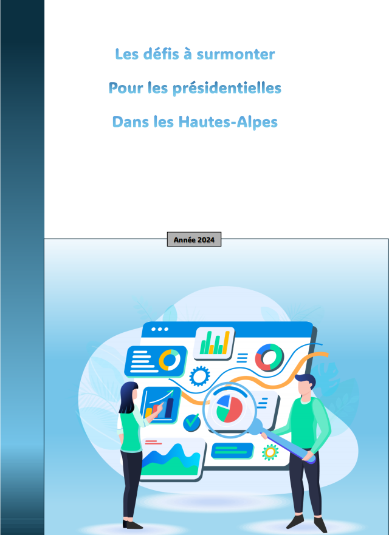

Apprendre en situation la production de données en entreprise
Le but est d'étudier la population des Hautes-Alpes en France afin de simplifier le processus décisionnel. On nous a chargé d'utiliser les données de l'INSEE pour créer des graphiques significatifs et rédiger des textes explicatifs sur le travail réalisé.
Technologies employées : Excel & Word
Compétence :
Apprentissages critiques :